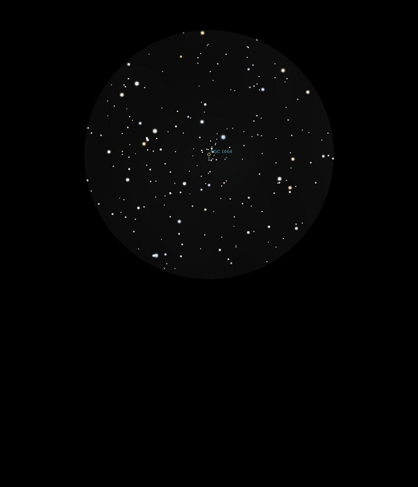

NGC 1664
Open Cluster
in Auriga
Mag 7.6
NGC
1664
03/12/16
Faint and quite small Open Cluster, shaped like a Christmas
Tree with a Mag 7.45 star as it's 'star'
The cluster members are all very much fainter
There seems to be an extended part of the cluster at the
base of the 'tree' but away from it
Small even in 8mm but very nice, if rather ragged away from
the Mag 7.5 star
04/12/16
A small, faint but attractive Open Cluster which has the
benefit of being easy to locate!
I'm sure it's in two distinct pieces, the 'Christmas Tree'
above and then a smaller and more ragged patch below and to
the right